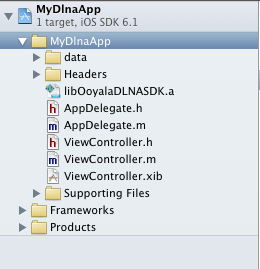

You need to set up a project for iOS development.
In our example, we are using the Xcode IDE. The Apple Xcode tool will help with your iOS
development effort. To get started with your development project, launch your Xcode app.
Note: You need to be able to configure for DLNA Playback and be able to test your setup.
An example is provided in Appendix A.
-
Create a New XTV Project
-
Select Create a new Xcode project.
-
Select a template for your new application. In the following example, we selected the
Single View Application.
-
Name Your Project
Enter the options for your project. Provide a Product Name (your application name),
select the device (iPhone) and any other relevant option.
-
Import Required Libraries
Your next step is to import some required libraries from the iOS SDK and XTV Connect
DLNA for iOS SDK.
Here is a list of all of the files that you need to import into your project.
- AssetsLibrary.framework
- AudioToolbox.framework
- AVFoundation.framework
- CFNetwork.framework
- CoreGraphics.framework
- CoreMedia.framework
- CoreText.framework
- Foundation.framework
- MediaPlayer.framework
- Security.framework
- SystemConfiguration.framework
- UIKit.framework
- libc++.dylib
- libxml2.dylib
-
Copy Library, Data, Headers
-
Open the Ooyala iOS SDK.
-
Drag and drop the iOS SDK Headers folder into your Xcode development tool.
-
Open the Ooyala XTV Connect DLNA plug-in SDK.
-
Drag and drop the XTV Connect DLNA SDK plug-in Headers folder into your Xcode development
tool.

-
Edit the View Controller
You will add the following lines of code to the ViewController. Obtain your provider ID
(PCODE) from your Backlot account. For more information about this, see the topic Your API Keys.
-
Add your PCODE to and your player's domain (such as
http://www.ooyala.com) to the line:
d[[ OODlnaPlayerViewController alloc ]Â initWithPcode:PCODE domain:[[OOPlayerDomain alloc]
initWithString:PLAYERDOMAIN];
-
You need to specify your embed code (you can get this from Backlot) for this statement:
[ooyalaPlayerViewController.player setEmbedCode:EMBED_CODE];
-
You can cut and paste the lines of code in the following example as needed. You do need to
make sure that you provide your specific pcode and embed code.
#import "ViewController.h"
// Create Ooyala ViewController
ooyalaPlayerViewController = [[ OODlnaPlayerViewController alloc ] initWithPcode:PCODE domain:[[OOPlayerDomain alloc]
initWithString:PLAYERDOMAIN];
// Attach it to current view
[self addChildViewController:ooyalaPlayerViewController];
// Set player frame && attach the view
[ooyalaPlayerViewController.view setFrame:self.view.frame];
[self.view addSubview:ooyalaPlayerViewController.view];
// Load the video
[ooyalaPlayerViewController.player setEmbedCode:EMBED_CODE];
You now have everything in place to run your build.
-
Build Your Project
After you have copied all the necessary components into your development environment,
select Run to build your project. If successful, you will be able to use
XBMC to see your results.
Troubleshooting
If you have any trouble with your build or build results, try running through the following
troubleshooting tips.
- Verify that your devices are all on the same wifi network and that the following ports are
open for the indicated protocols:
- UDP: port 1900
- TCP: port 2869
- Make sure the data directory is properly bundled with your app. If this is incorrectly
configured, a log message is generated:
Device DB not installed
- Verify your setup with XBMC DLNA/Airplay renderers. See Using XBMC to Configure and Test DLNA Playback.